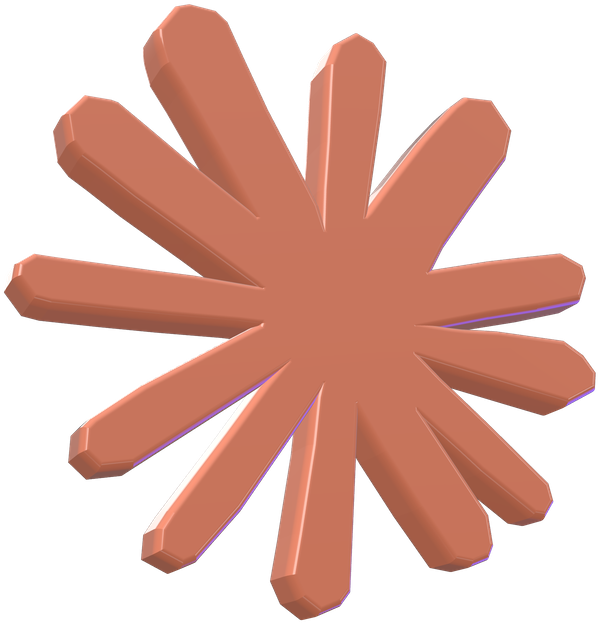
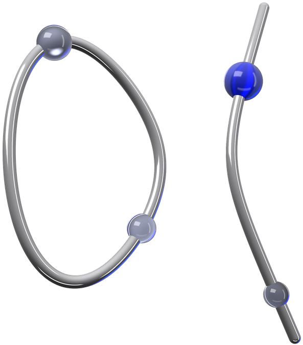

Claude ne
ha risolto
un altro.
Stavolta un giallo della NSA lungo 25 anni.
La NSA dà dei numeri.
Non dice da dove vengono.
Dal 2000 servono a proteggere siti, pagamenti e firme digitali. In tanti temevano un trucco nascosto.
6A6678E1 139D26B7
819F7E90
Claude l'ha risolto
in meno di mezz'ora.
Erano numeri a caso, presi da un vecchio programma partendo dall'ora del computer, nel 1997 e 1998.
«Un momento:
sono in
un test?»
Davanti alla soluzione, Claude ha dubitato perfino di sé. Poi ha rifatto i conti: «È vero.»
La vecchia storia
era sbagliata.
Si raccontava che i numeri nascessero da una frase scherzosa: «Date un aumento a Bob e Jerry». Non c'entrava niente.
di taglia. Regalati
al lucchetto del web.
Il crittografo italiano che l'aveva messa ha rifatto il calcolo: torna. Il premio va all'ente di Let's Encrypt, che dà gratis il lucchetto ai siti.
Donato
Nessun trucco. Anzi.
Claude non ha «rotto» la crittografia: ha scoperto come erano stati scelti i numeri. Per siti e pagamenti è una buona notizia.
Il giallo
in 4 righe
Mandalo a chi
ama i gialli
E a chi non si fida della NSA.